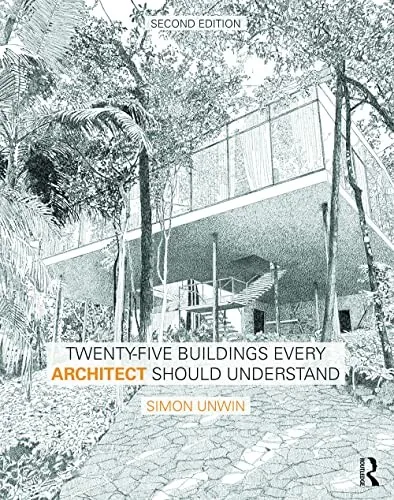
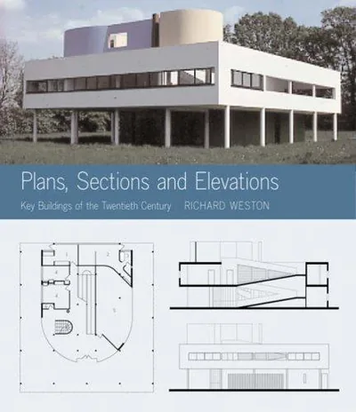
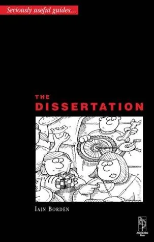

Reading list · Books
The best architecture books for students
The short answer
Start with five: Ching's Architecture: Form, Space, and Order, Frederick's 101 Things I Learned in Architecture School, Rasmussen's Experiencing Architecture, Unwin's Analysing Architecture and Pallasmaa's The Eyes of the Skin. Together they teach what first-year studio asks of you: to draw space, notice how it feels and take a building apart on paper. The rest of the list follows you through school.
Start here: your first year
The books first-year tutors expect you to have opened. Read them with a sketchbook beside you.
Architecture: Form, Space, and Order
Francis D. K. Ching · 1979
The drawing-led primer most schools set in first year: points, lines, planes, volumes and how they organise space.

101 Things I Learned in Architecture School
Matthew Frederick · 2007
One lesson per page, each with a sketch. The quickest way to hear what studio tutors keep saying.

Experiencing Architecture
Steen Eiler Rasmussen · 1959
How buildings feel to walk through: solids and cavities, scale, rhythm, texture, daylight, colour and sound.

Analysing Architecture
Simon Unwin · 1997
How to read a building: the basic elements, the way they frame places, and drawings that show it.

Lessons for Students in Architecture
Herman Hertzberger · 1991
Hertzberger shows his own buildings and others to explain thresholds, in-between spaces and how people take over a place.

A Visual Dictionary of Architecture
Francis D. K. Ching · 1995
Every term a student meets, each with a drawing. Keep it on the desk.
Learn to see and feel space
Short books about light, material, memory and the body. Most can be read in an evening.

The Eyes of the Skin
Juhani Pallasmaa · 1996
A short argument that architecture is for all the senses, not just the eye. Read in one sitting.

Thinking Architecture
Peter Zumthor · 1998
Short essays on how buildings feel: material, sound, light and the memory of places. By the architect of Therme Vals.

The Poetics of Space
Gaston Bachelard · 1958
A philosopher on cellars, attics, drawers and nests: the house as a place of the imagination.

In Praise of Shadows
Jun'ichirō Tanizaki · 1933
A short Japanese essay on darkness, lacquer, paper and the beauty of dim rooms.

Body, Memory, and Architecture
Kent C. Bloomer and Charles W. Moore · 1977
How the body and memory shape the way we experience buildings. A short classic from Yale.
Precedent and case studies
For the week you're given a building to analyse: how to take it apart, and where to find its drawings.

Precedents in Architecture
Roger H. Clark and Michael Pause · 1985
Dozens of famous buildings redrawn as the same set of diagrams: structure, light, circulation, geometry. Learn how to analyse precedents.

Twenty-Five Buildings Every Architect Should Understand
Simon Unwin · 2015
Twenty-five buildings taken apart in Unwin's own drawings. The next step after Analysing Architecture.

Key Buildings of the Twentieth Century: Plans, Sections and Elevations
Richard Weston · 2004
Plans, sections and elevations of the key buildings of the twentieth century, side by side. A fast place to find drawings for a case study.

The Place of Houses
Charles Moore, Gerald Allen and Donlyn Lyndon · 1974
How a house makes rooms, machines and dreams fit together. Plain, warm and still useful for a first house project.
Drawing
Plans, sections, axonometrics and sketching from life.

Architectural Graphics
Francis D. K. Ching · 1975
Plans, sections, elevations, paraline and perspective drawings, and how to letter them.

Design Drawing
Francis D. K. Ching · 1998
Seeing and drawing from observation, then drawing to design.
Architectural Drawing: A Visual Compendium of Types and Methods
Rendow Yee · 1997
Every kind of architectural drawing, with many examples from real projects.
On the studio desk
Reference books you open every week: sizes, standards, and help with the dissertation.

Architects’ Data
Ernst Neufert · 1936
The book of dimensions on every studio desk: rooms, stairs, furniture, building types.

Metric Handbook: Planning and Design Data
Pamela Buxton (editor) · 1968
The British reference for space standards and building types.

The Dissertation: An Architecture Student's Handbook
Iain Borden, Katerina Ruedi Ray · 2000
How to choose a topic, research it and write an architecture dissertation, step by step.
Theory: the books everyone argues about
The arguments behind modern and postmodern architecture. Tutors quote them; read them yourself.

Towards a New Architecture
Le Corbusier · 1923
Ships, aeroplanes, grain silos and the five points. The loudest book of the twentieth century.

Complexity and Contradiction in Architecture
Robert Venturi · 1966
"Less is a bore." The gentle manifesto that opened the door to postmodernism.
The Architecture of the City
Aldo Rossi · 1966
The city as a collective memory built from types and monuments. Key to reading European urban form.

A Pattern Language
Christopher Alexander, Sara Ishikawa and Murray Silverstein · 1977
253 patterns, from regions to window seats, each a problem and a solution. Open it anywhere.
Learning from Las Vegas
Robert Venturi, Denise Scott Brown and Steven Izenour · 1972
The studio that went to the Strip and came back with the duck and the decorated shed.

Delirious New York
Rem Koolhaas · 1978
A retroactive manifesto for Manhattan: the grid, the skyscraper and the culture of congestion.
Cities
Two short classics that change how you walk down a street.

The Death and Life of Great American Cities
Jane Jacobs · 1961
Sidewalks, mixed uses, old buildings and eyes on the street. The book that stopped the bulldozers.
The Image of the City
Kevin Lynch · 1960
Paths, edges, districts, nodes and landmarks: how people hold a city in their heads.
History
The surveys history courses set, from the first buildings to the modern movement.

A Global History of Architecture
Francis D. K. Ching, Mark Jarzombek and Vikramaditya Prakash · 2007
Buildings from every continent, arranged by date rather than by country, with Ching drawings.

Modern Architecture Since 1900
William J. R. Curtis · 1982
The standard survey of the modern movement worldwide, with the buildings on this wall in it.

Modern Architecture: A Critical History
Kenneth Frampton · 1980
Denser than Curtis and more argued. The other book every history course sets.
How buildings stand up and work
Structure, construction and climate, explained with drawings rather than heavy maths.

Building Construction Illustrated
Francis D. K. Ching · 1975
Foundations, walls, floors, roofs and openings, drawn so you can see how they go together.

Structures: Or Why Things Don't Fall Down
J. E. Gordon · 1978
Tension, compression, beams and arches explained with humour and no heavy maths.

Sun, Wind & Light: Architectural Design Strategies
G. Z. Brown and Mark DeKay · 1985
Climate-responsive design as rules of thumb you can use at sketch stage.
Designing for the Climate Emergency: A Guide for Architecture Students
Sofie Pelsmakers, Emily Warwick · 2022
Written for students: how to design low-carbon buildings from the first sketch onwards.

How Buildings Learn
Stewart Brand · 1994
What happens to buildings after the architect leaves: layers that change at different speeds.
Free classics
Old enough to be in the public domain, so you can read them online for free.
The Ten Books on Architecture
Vitruvius · c. 30 BC
Firmness, commodity and delight. The only architecture book to survive from antiquity, free online.

The Four Books of Architecture
Andrea Palladio · 1570
Palladio's villas and the orders, drawn by himself. Public domain, and the plates are online.

The Seven Lamps of Architecture
John Ruskin · 1849
Sacrifice, truth, power, beauty, life, memory and obedience: Ruskin on what buildings owe us.
Chosen from the reading lists schools set most often and the books architects keep going back to, grouped by when you'll need them. Each one is on the site's book shelf, where you can see the buildings and architects it covers.
Questions students ask
What is the first book an architecture student should read?
Francis D. K. Ching's Architecture: Form, Space, and Order. Most schools set it in first year because it teaches, in drawings, how points, lines, planes and volumes make space. Read Matthew Frederick's 101 Things I Learned in Architecture School alongside it: it takes an afternoon.
Do I need to buy all of these?
No. Buy the two or three you'll draw from every week (Ching, and Neufert's Architects' Data for sizes) and borrow the rest from your school library. The theory and history books are on almost every architecture library's shelves.
Are there free architecture books I can read online?
Yes. Vitruvius's Ten Books on Architecture, Palladio's Four Books of Architecture and Ruskin's Seven Lamps of Architecture are in the public domain and free to read online. The site's shelf has more under 'Free to read'.
Which architecture theory books should I read first?
Start with Le Corbusier's Towards a New Architecture and Robert Venturi's Complexity and Contradiction in Architecture: they argue opposite sides, so reading both shows you what the twentieth-century debate was about. Then Aldo Rossi's The Architecture of the City and Christopher Alexander's A Pattern Language.
Which book helps with a precedent study or case study?
Clark and Pause's Precedents in Architecture shows how to analyse a building with a fixed set of diagrams, and Simon Unwin's Twenty-Five Buildings Every Architect Should Understand does it in depth for single buildings. For the drawings themselves, Richard Weston's Key Buildings of the Twentieth Century collects plans, sections and elevations.